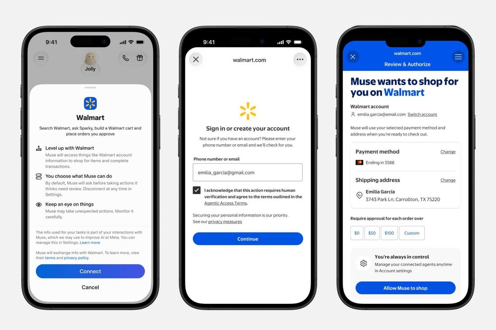
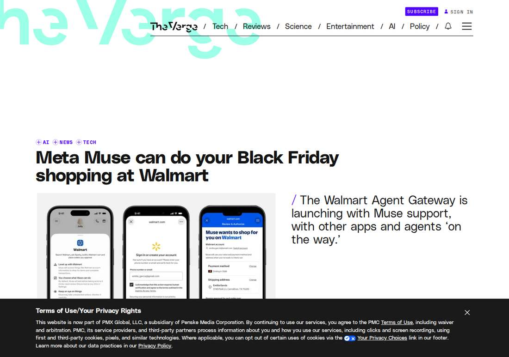

Walmart Lets Meta's Muse Shop and Check Out, Opening Agent Commerce for Black Friday
Walmart's Agent Gateway went live with Meta's Muse on November 23, 2026, letting the AI agent find Black Friday deals, build a basket and complete checkout inside the conversation. It is the first live implementation of the Gateway Walmart announced on October 21, and the first time a major retailer has let an outside AI agent transact on its storefront.

- 01THE ANNOUNCEMENT — October 21, 2026: Walmart announces the Agent Gateway, Agent Profiles and Agentic Access Terms, saying browser-based agents are sluggish and error-prone on human-designed websites and offering an MCP-based path instead.
- 02THE LAUNCH — November 23, 2026: the Gateway goes live with Meta's Muse as the first agent, The Verge reports. Walmart first told the publication the launch was delayed to November 24, then said the same day it would roll out on November 23 after all.
- 03HOW IT WORKS — Tell Muse what is needed; sign in to Walmart and set up an Agent Profile with a spending limit on the first add-to-cart; check out inside the conversation with a saved card, at Walmart.com prices, under Walmart's return policy.
WHAT HAPPENEDWhat Happened
Walmart's Agent Gateway went live with Meta's Muse on November 23, 2026, The Verge reported, the first live implementation of the agent-shopping system Walmart announced on October 21. Muse can now find and purchase Black Friday deals on Walmart.com, searching products, building a basket and completing checkout without leaving the conversation. The launch date itself was confused through the day: Walmart first told The Verge the rollout was delayed to November 24, then contacted the publication again to say it would go out on November 23 after all.
The purchase runs in three steps, as Walmart describes them. A shopper tells Muse what is needed — a television deal, for example, or Black Friday items available for delivery — and Muse explores products and builds the basket. The shopper then signs in to Walmart, and the first time an item is added to the cart, sets up an Agent Profile, including a spending limit. Checkout completes inside the conversation using a card already saved in the Walmart account, at the same prices shown on Walmart.com, with Walmart's return policy applying.
The controls are the point. An Agent Profile gives the agent a dedicated space inside the customer's Walmart account, separate from the customer's own purchases, where the shopper can set spending limits, approve purchases and review everything Muse bought. The Gateway is designed so agents can find relevant products without receiving the customer's purchase history, and the agent never receives raw stored payment-card data, according to Walmart's Agentic Access Terms as described by Unite.AI. Walmart calls Muse support "just the beginning", with shopping experiences for other AI agents and apps on the way — a deliberate contrast with Amazon and eBay, which have blocked AI agents from browsing their platforms.
WHY IT MATTERSCheckout is the line between an agent that advises and an agent that transacts.
Until now, shopping agents recommended and humans clicked buy. Walmart let one cross the line on a major storefront days before Black Friday. Amazon and eBay chose the opposite — block agents outright. Walmart chose to channel them through a gateway it controls, with profiles, limits and approvals. The contrast is now a live experiment with two models, and the holiday season is the test bed.
The move also reframes who owns the customer relationship. The purchase happens inside Muse's conversation, on Walmart's rails, under Walmart's rules — Muse sees the same prices as Walmart.com, and Walmart's return policy applies. Meta gets the transaction moment; Walmart keeps the account, the payment method and the audit trail.
THE WATCHPOINTThe controls are the product, and Black Friday is the stress test.
Spending limits, per-purchase approval and a separate purchase history are what make the delegation acceptable; without them it is an agent with a credit card. The Gateway is still an early beta with invitation-only access, and Walmart says it may be suspended at any time, per Unite.AI.
The honest test is not the launch demo but the first disputed charge, the first wrong item, and the first overspend at holiday volume. If the controls hold, every other retailer faces the same choice Walmart just made. If they fail on the first Black Friday complaint, the walled gardens win the argument.
THE SHIFTWhat Changed
SIGNAL JUDGMENT — ANALYSISWalmart just let an agent hold the wallet, with rules attached.
Tokenta Signal's judgment: this is the first real-world test of agentic checkout at retail scale, and the timing — days before Black Friday — is deliberate. The product is not the shopping; it is the control layer: Agent Profiles, spending limits, approval rules and a purchase history the shopper can audit. If those controls hold at holiday volume, every other retailer faces the same choice Walmart just made. If they fail on the first disputed charge, the walled gardens win the argument.
WHAT REMAINS UNCERTAINWhat Remains Uncertain
EVIDENCEEvidence

Walmart's Agent Gateway went live with Meta's Muse on November 23, 2026: the agent can find Black Friday deals, build a basket and check out inside the conversation, under customer-set spending limits and Agent Profiles.
PRIMARY SOURCESPrimary Sources
- The Verge: Meta Muse can do your Black Friday shopping at Walmart
https://www.theverge.com/ai-artificial-intelligence/1039874/walmart-agent-gateway-meta-muse-black-friday - Unite.AI: Walmart Enables Muse Shopping Through Its Agent Gateway
https://www.unite.ai/walmart-enables-muse-shopping-through-its-agent-gateway/